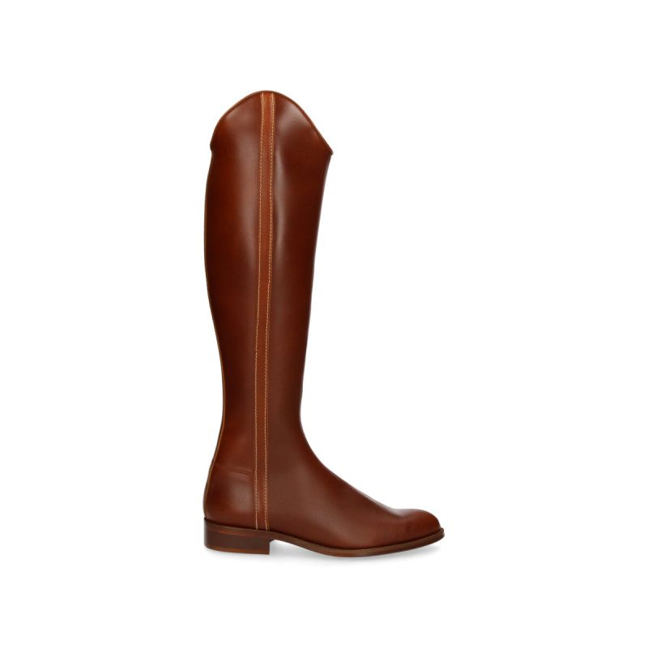
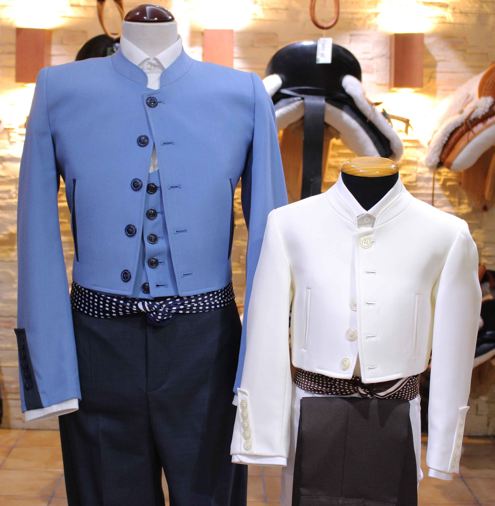

Nosotros vendemos todo tipos de botos camperos de material, desde botos de caña alta hasta botos de caña alta y media , siempre buscando la mayor comodidad para nuestros clientes. Los modelos mas vendidos son los botos camperos rocieros, este es nuestro producto estrella, ya que tenemos muy buena relacion calidad-precio

Trajes de corto, pantalones camperos todo tipo de moda relacionada con el jinete
En nuestra tienda vendemos todo tipo de moda tanto femenina como masculina, relacionada con el jinete. Tenemos todo tipo de trajes de corto y trajes de gitana hechos por nototros, tambien vendemoa una gran cantidad de panmtalones camperos y chalequillos. Colaboramos con la tienda Antonio Gracia que nos abastece de todo tipo de sombreros y de gorras. Aqui os dejamos alguno de los trajes y complementos que vendemos

Sajones
Si por algo ha sido por lo que Guarnicioneria Lira ha llegado hasta aqui, es gracias a nuestra gan variedad de sajones y su calidad, desde que se abrio esta tienda su especialidad ha sido los sajones y ahora os mostraremos algunos y una parte de como se realizan